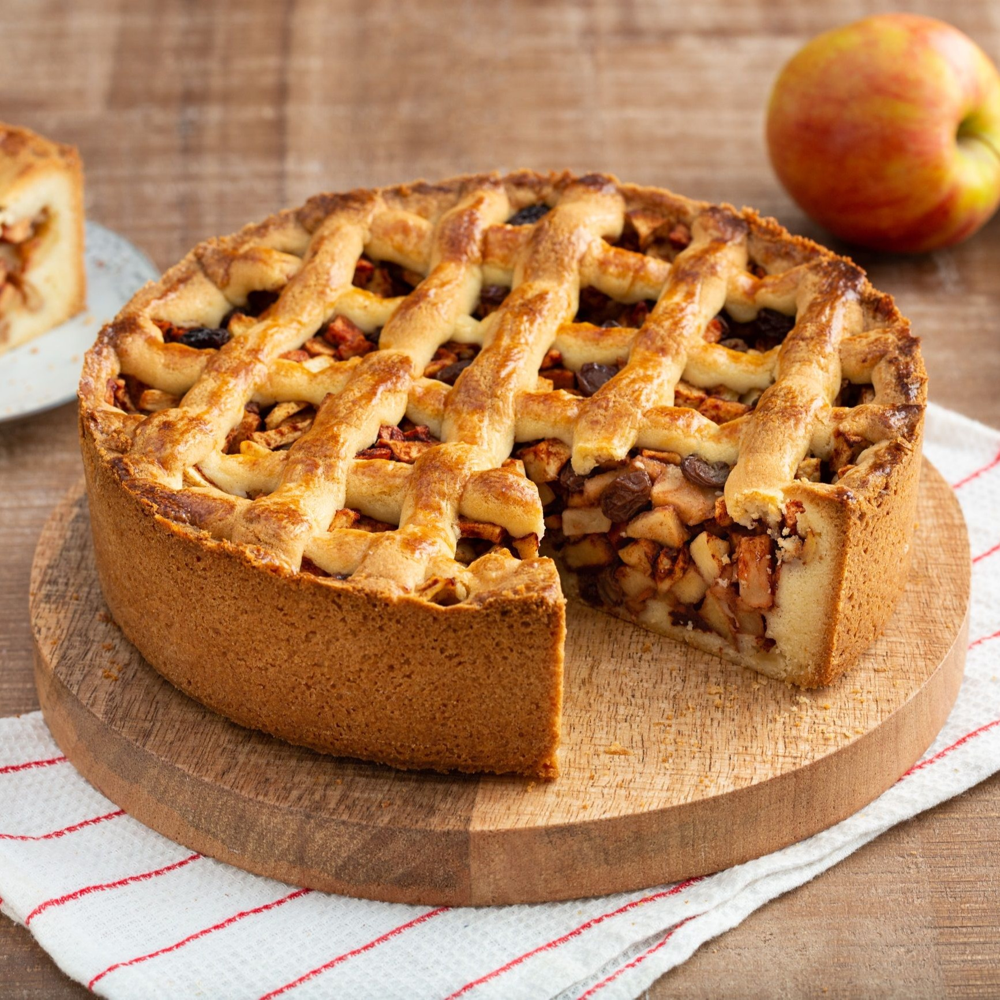

1. Verwarm de oven voor op 180°C
2. Meng de bloem en suiker in een kom.
3. Voeg de boter toe en meng het met de bloem en suiker.
4. Voeg het ei toe.
5. Kneed het deeg tot een bal.
6. Wikkel het deeg in plasticfolie en laat het minstens 30 minuten rusten in de koelkast.
7. Schil de appels, en snijd ze in dunne plakjes.
8. Meng de appels in een kom met suiker en kaneel.
9. Rol 2/3 deel van het deeg uit tot een cirkel die groot genoeg is om de bodem en zijkanten van de taartvorm te bedekken.
10. Leg de plakjes appel gelijkmatig over de deegbodem.
11. Rol het overgebleven deeg uit tot een cirkel die de bovenkant van de taart bedekt. Snijd eventueel decoratieve patronen.
12. Bedek de appels met het deegdeksel.
13. Bak de appeltaart in de voorverwarmde oven voor 45-50 minuten.
Tip Serveer de appeltaart eventueel met een toefje slagroom.